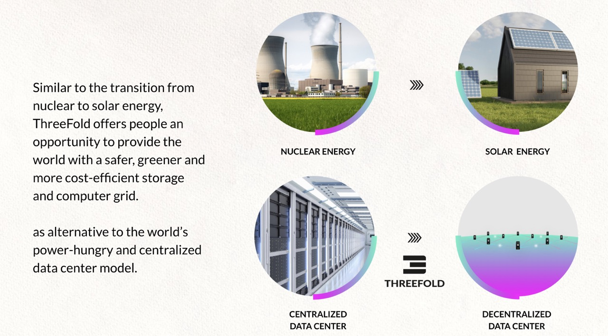
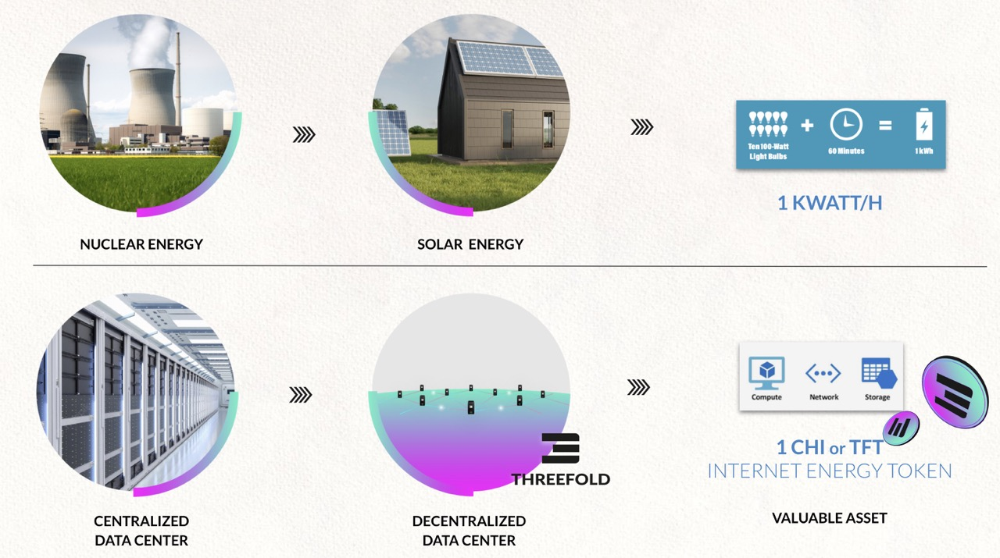
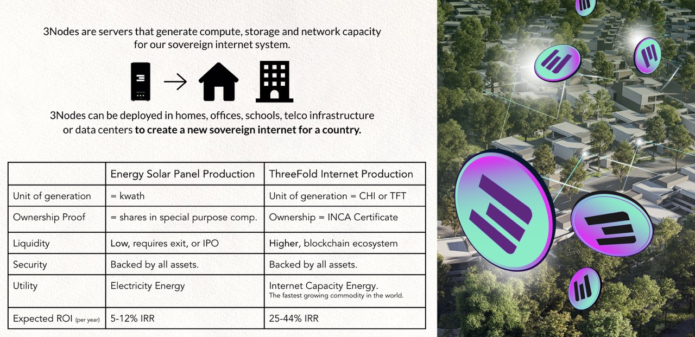

What does Internet Farming have to do with Solar Panels?
A 3Node is just like a solar panel, only instead of providing electricity, it provides Internet Capacity for local usage. Each 3Node is an Internet Capacity generator. And the ThreeFold Grid is the network of these 3Nodes.
What is Internet Capacity?
Internet Capacity can be described as the fundamental resources necessary for anything "digital," and really it all comes down to data.
- Storage is the physical disk space where data resides
- Compute is what happens with data once it reaches its destination
- Networking is how data gets around
Together, these are the raw elements required to drive our digital lives.
In an enterprise, it's called Information Technology (IT) systems. Examples of IT workloads which can run on the ThreeFold_Grid are:
- The Metaverse
- IoT
- Web2 and Web 3
- Blockchain
- Web Applications
- Archiving of data
- Generic Storage (e.g. using the S3 storage interface)
- Container Workloads (e.g. Docker images)
- Artificial Intelligence workloads
- Big Data workloads (processing of data)
- Gaming Servers
- Content Delivery
- Test workloads for developers
- DApps (Decentralized Applications)
TODO: link to the internet pages (at end)
The production of Internet Capacity on the Threefold Grid is called Farming, and people who add these servers to the grid are called Farmers.

It would not make sense for someone living in Florida (USA), as an example, to get their electricity from Europe. That is quite a long distance and generates considerable waste. Much like electricity, Internet Capacity should be generated and distributed locally to nearby people and businesses. Local capacity means reduced costs, greater reliability, less latency, and an overall better experience for end users.
TFT is the Utility Token of generating Internet Capacity

Just like Kilowatt-Hour (kW) is used as a measurement of capacity for solar panels, we have cloud units to measure capacity for the Internet. Cloud units are the basis for buying & selling capacity on the ThreeFold Grid.
- 1 SU = 1 storage unit
- 1 CU = 1 compute unit
- 1 NU = 1 network unit
When a solution is deployed on the ThreeFold Grid, the system automatically gathers the required amount of SU, CU, or NU.
Nodes Get Deployed Everywhere

TODO: link to the internet pages (at end)
For more info about how the internet works see here
TODO: complete